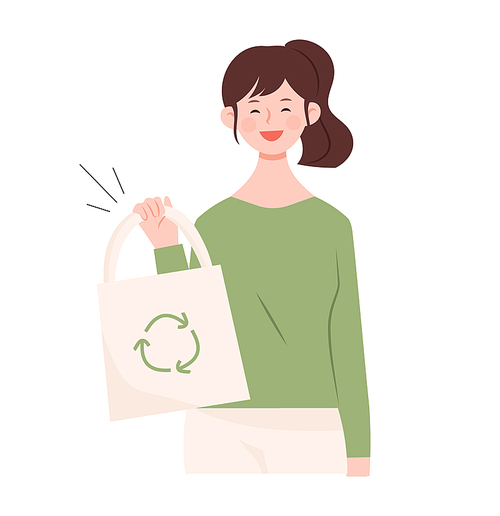

-
여름엔 26℃ 이상, 겨울엔 20℃ 이하로 유지하기
냉난방 온도를 1℃ 조정할 경우 연간 110kg CO₂를 줄일 수 있으며, 냉난방 비용을 34,000원 줄일 수 있습니다.
계절에 맞는 적정 실내 온도를 유지합니다.

-
절전형 전등으로 교체하기
백열등(60W)을 형광등(24W)으로 교체 시 연간 17kg의 CO₂를 줄일 수 있습니다.
절전형 형광등은 백열등과 비교해 수명이 약 8배 길며, 전력소비가 적습니다.

-
가전제품 플러그를 뽑아 두기
대기전력은 에너지 사용 기기 전체 이용 전력의 약 10%를 차지합니다.
멀티탭은 잘 보이는 곳에 두어 손쉽게 대기전력을 차단할 수 있도록 합니다.

-
걷기 > 자전거 타기 > 대중교통 이용을 생활화하기
승용차 이용을 일주일에 하루만 줄여도 연간 445kg의 CO₂를 줄일 수 있습니다.

-
장바구니를 애용하기
1회용 비닐봉지(연간 160억개)가 분해되는 데 100년 이상 걸립니다.
가정 쓰레기를 철저히 분리만 하여도 연간 188kg의 CO₂를 줄일 수 있습니다.
 -
친환경 상품을 구매하기
친환경 상품 사용으로 가구당 연간 350kg의 CO₂를 줄일 수 있습니다.
환경마크 제품, 에너지 효율이 높은 제품을 구매합니다.

-
샤워 시간은 줄이고, 빨래는 모아서 하기
샤워 시간을 1분 줄이면 가구당 연간 4.3kg의 CO₂를 줄일 수 있습니다.
빨래를 모아서 하면 가구당 연간 14kg의 CO₂를 줄일 수 있습니다.
설거지통을 이용(10분)하면 약 80리터의 물을 절약할 수 있습니다.

-
적절한 음식 조리량
연간 버려지는 음식물 쓰레기를 돈으로 환산하면 15조원이 넘습니다.
몸에도 좋고 온실가스도 덜 발생시키는 제철 식료품, 지역 농산물을 먹습니다.